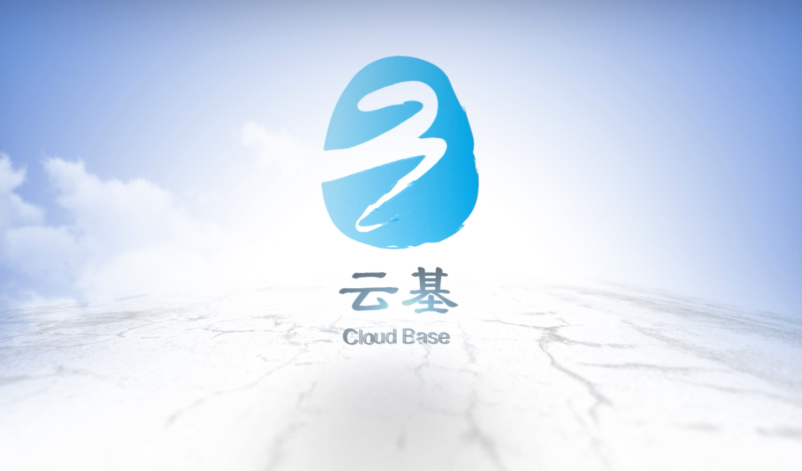
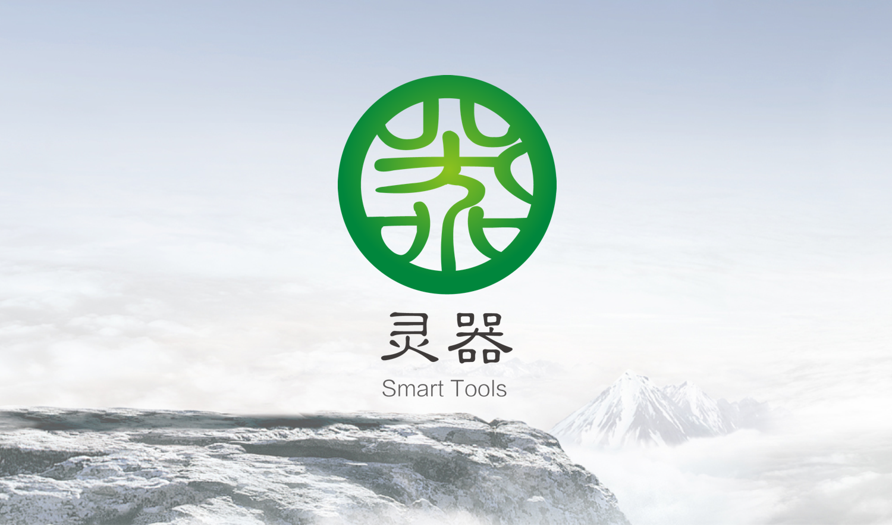
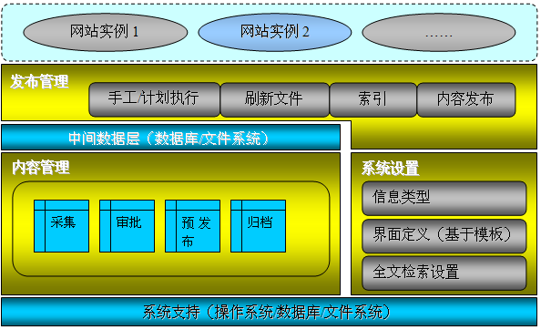
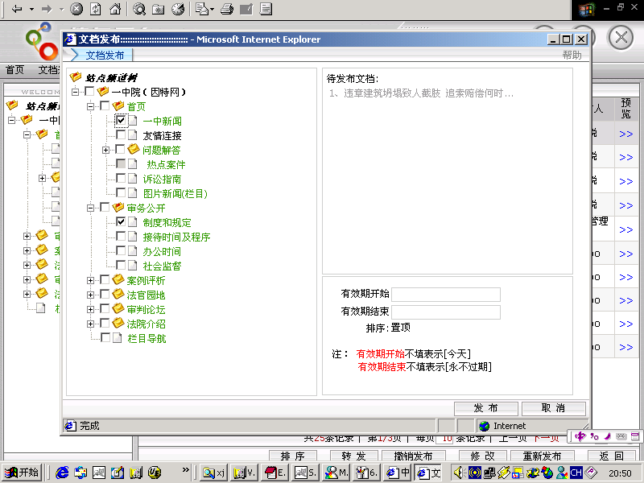

<!DOCTYPE html>
<html>
<head>
    <!--
    Customize this policy to fit your own app's needs. For more guidance, see:
        https://github.com/apache/cordova-plugin-whitelist/blob/master/README.md#content-security-policy
    Some notes:
        * gap: is required only on iOS (when using UIWebView) and is needed for JS->native communication
        * https://ssl.gstatic.com is required only on Android and is needed for TalkBack to function properly
        * Disables use of inline scripts in order to mitigate risk of XSS vulnerabilities. To change this:
            * Enable inline JS: add 'unsafe-inline' to default-src
    -->
    <!--
    <meta http-equiv="Content-Security-Policy" content="default-src 'self' data: gap: https://ssl.gstatic.com 'unsafe-eval'; style-src 'self' 'unsafe-inline'; media-src *; img-src 'self' data: content:;">
    -->

    <meta http-equiv="Content-Type" content="text/html; charset=UTF-8">
    <meta name="format-detection" content="telephone=no">
    <meta name="msapplication-tap-highlight" content="no">
    <meta name="viewport"
          content="user-scalable=no, initial-scale=1, maximum-scale=1, minimum-scale=1, width=device-width">
    <link rel="stylesheet" href="css/base.css">
    <link rel="stylesheet" href="css/index.css">
    <title>基础产品演示平台</title>
</head>
<body>
<div id="app">
    <router-link class="page-back" v-if="visible" :to="'/'">
        <i class="mintui mintui-back"></i>
    </router-link>
    <transition name="fade" mode="out-in">
        <keep-alive>
            <router-view></router-view>
        </keep-alive>
    </transition>
</div>

<script type="text/javascript" src="cordova.js"></script>
<!-- 先引入 Vue -->
<script type="text/javascript" src="js/vue.js"></script>
<script type="text/javascript" src="js/vue-resource.js"></script>
<script type="text/javascript" src="js/vue-router.js"></script>
<!-- 引入组件库 -->
<script type="text/javascript" src="js/mint.js"></script>
<script type="text/javascript" src="js/jquery.min.js"></script>
<!-- 添加页面模板 -->
<script type="text/x-template" id="mainpage">
    <div class="page-tabbar">
        <mt-header title="基础产品演示平台" fixed></mt-header>
        <div class="page-wrap">
            <mt-tab-container class="page-tabbar-container" v-model="selected" ref="tabContrainer">
                <mt-tab-container-item id="基础产品">
                    <div class="page-navbar">
                        <mt-navbar class="page-part" v-model="jccpSelected">
                            <mt-tab-item id="yj">云基</mt-tab-item>
                            <mt-tab-item id="lq">灵器</mt-tab-item>
                        </mt-navbar>
                        <mt-tab-container v-model="jccpSelected">
                            <mt-tab-container-item id="yj">
                                <!-- 云基 -->
                                <div class="mtslider">
                                    
                                </div>
                                <div class="mtArticle clearfix">
                                    <h1 class="mtArticleH1">
                                        
                                        <span>“云基”平台系列产品</span>
                                    </h1>
                                    <p>
                                        平台化的设计理念起源于构件化和模块化软件开发思想，将应用软件开发过程中的通用功能进行提炼和升华，并按照松耦合、强内聚的基本设计思想进行功能划分和接口设计，使平台模块之间既保持接口上的关联，又实现功能上的独立。</p>
                                </div>
                                <div class="mtMenulist clearfix">
                                    <ul>
                                        <li><router-link :to="'/infoplat'"><i class="iconfont icon-inforelease"></i><span>信息发布平台</span></router-link></li>
                                        <li><router-link :to="'/config'"><i class="iconfont icon-xinxifabu"></i><span>系统配置平台</span></router-link></li>
                                        <li><router-link :to="'/coral'"><i class="iconfont icon-guizezujian"></i><span>基础组件平台</span></router-link></li>
                                        <li><router-link :to="'/search'"><i class="iconfont icon-gongzuoliu"></i><span>全文检索平台</span></router-link></li>
                                        <li><router-link :to="'/authsystem'"><i class="iconfont icon-xitongguanli"></i><span>系统管理平台</span></router-link></li>
                                        <li><router-link :to="'/workflow'"><i class="iconfont icon-kuaisujiansuo"></i><span>工作流平台</span></router-link></li>
                                    </ul>
                                </div>

                            </mt-tab-container-item>
                            <mt-tab-container-item id="lq">
                                <!-- 灵器 -->
                                <div class="mtslider">
                                    
                                </div>
                                <div class="mtArticle clearfix">
                                    <h1 class="mtArticleH1">
                                        
                                        <span>“灵器”工具系列产品</span>
                                    </h1>
                                    <p>
                                        工具软件是指可以完成某一功能的独立软件，相对于应用软件的主体作用而言，工具软件起到了辅助作用，使用工具软件能节省软件生产开发时间和费用，提高软件生产率和质量。工具既可以在一定的条件下独立运行，也可以作为应用软件功能的一部分集成到项目中去，还可以作为基础功能整合在软件产品中。</p>
                                </div>
                                <div class="mtMenulist clearfix">
                                    <ul>
                                        <li><router-link :to="'/infoplat'">电子文件通用浏览器</router-link></li>
                                        <li><router-link :to="'/infoplat'">电子文件封装工具</router-link></li>
                                        <li><router-link :to="'/infoplat'">电子文件格式转换软件</router-link></li>
                                        <li><router-link :to="'/infoplat'">电子文件检测软件</router-link></li>
                                        <li><router-link :to="'/infoplat'">电子文件离线浏览软件</router-link></li>
                                    </ul>
                                </div>
                            </mt-tab-container-item>
                        </mt-tab-container>
                    </div>
                </mt-tab-container-item>
                <mt-tab-container-item id="云数物端">
                    <div class="page-navbar">
                        <mt-navbar class="page-part" v-model="yswdSelected" ref="yswdTab">
                            <mt-tab-item id="yjs">云计算</mt-tab-item>
                            <mt-tab-item id="dsj">大数据</mt-tab-item>
                            <mt-tab-item id="wlw">物联网</mt-tab-item>
                        </mt-navbar>
                        <mt-tab-container v-model="yswdSelected" ref="yswdContainer">
                            <mt-tab-container-item id="yjs">
                                <!-- 云计算 -->
                                <mt-loadmore :top-method="loadYjsTop" :auto-fill="false" ref="yjsloadmore">
                                <div class="cloudBox">
                                    <div class="cloudSum">
                                        <span class="data-name textxS">总金额</span>
                                        <span class="data-num textM" v-if="datas == null"><mt-spinner color="#26a2ff" type="fading-circle"></mt-spinner></span>
                                        <span class="data-num textM" v-else v-html="datas.total.totalString"></span>
                                    </div>
                                    <div class="cloudDeatil clearfix">
                                        <ul>
                                            <li>
                                                <span class="cloudDetailName">云主机数量</span>
                                                <span class="data-num" v-if="datas == null"><mt-spinner color="#26a2ff" type="fading-circle"></mt-spinner></span>
                                                <span class="data-num" v-else v-html="datas.total.serverCount"></span>
                                            </li>
                                            <li>
                                                <span class="cloudDetailName">内存数GB</span>
                                                <span class="data-num" v-if="datas == null"><mt-spinner color="#26a2ff" type="fading-circle"></mt-spinner></span>
                                                <span class="data-num" v-else v-html="datas.total.memorySize/1024"></span>
                                            </li>
                                            <li>
                                                <span class="cloudDetailName">CPU核数</span>
                                                <span class="data-num" v-if="datas == null"><mt-spinner color="#26a2ff" type="fading-circle"></mt-spinner></span>
                                                <span class="data-num" v-else v-html="datas.total.cpuCount"></span>
                                            </li>
                                            <li>
                                                <span class="cloudDetailName">内存GB小时数</span>
                                                <span class="data-num" v-if="datas == null"><mt-spinner color="#26a2ff" type="fading-circle"></mt-spinner></span>
                                                <span class="data-num" v-else v-html="datas.total.memoryHoursString"></span>
                                            </li>
                                            <li>
                                                <span class="cloudDetailName">CPU小时数</span>
                                                <span class="data-num" v-if="datas == null"><mt-spinner color="#26a2ff" type="fading-circle"></mt-spinner></span>
                                                <span class="data-num" v-else v-html="datas.total.cpuHours"></span>
                                            </li>
                                            <li>
                                                <span class="cloudDetailName">硬盘容量GB</span>
                                                <span class="data-num" v-if="datas == null"><mt-spinner color="#26a2ff" type="fading-circle"></mt-spinner></span>
                                                <span class="data-num" v-else v-html="datas.total.volumeSize"></span>
                                            </li>
                                        </ul>
                                    </div>
                                    <div class="cloudlist">
                                        <div class="module" v-for="group in groups">
                                            <div class="module-left">
                                                <div class="module-left-name multi" v-if="group.name.length > 6">
                                                    <span v-html="group.name"></span>
                                                </div>
                                                <div class="module-left-name" v-else>
                                                    <span v-html="group.name"></span>
                                                </div>
                                                <div class="module-left-data">
                                                    <i class="iconfont icon-renminbi"></i>
                                                    <span v-html="group.totalString"></span>
                                                </div>
                                            </div>
                                            <div class="module-right cloudDeatil">
                                                <ul>
                                                    <li>
                                                        <span class="item-name">云主机数量</span>
                                                        <span class="item-data" v-html="group.serverCount"></span>
                                                    </li>
                                                    <li>
                                                        <span class="item-name">CPU核数</span>
                                                        <span class="item-data" v-html="group.cpuCount"></span>
                                                    </li>
                                                    <li>
                                                        <span class="item-name">CPU小时数</span>
                                                        <span class="item-data" v-html="group.cpuHoursString"></span>
                                                    </li>
                                                    <li>
                                                        <span class="item-name">内存数GB</span>
                                                        <span class="item-data" v-html="group.memorySize/1024"></span>
                                                    </li>
                                                    <li>
                                                        <span class="item-name">内存GB小时数</span>
                                                        <span class="item-data" v-html="group.memoryHoursString"></span>
                                                    </li>
                                                    <li>
                                                        <span class="item-name">硬盘容量GB</span>
                                                        <span class="item-data" v-html="group.volumeSize"></span>
                                                    </li>
                                                </ul>
                                            </div>
                                        </div>
                                    </div>
                                </div>
                                </mt-loadmore>
                            </mt-tab-container-item>

                            <mt-tab-container-item id="dsj">
                                <!--大数据-->
                                <div class="mtslider productslider">
                                    
                                </div>
                                <div class="mtMenulist mtMenulistDashuju clearfix">
                                    <ul>
                                        <li><router-link :to="'/'">数据源</router-link></li>
                                        <li><router-link :to="'/'">数据抽取</router-link></li>
                                        <li><router-link :to="'/'">数据存储</router-link></li>
                                        <li><router-link :to="'/'">商业报表</router-link></li>
                                        <li><router-link :to="'/'">大数据库处理</router-link></li>
                                        <li><router-link :to="'/'">数据查询分析</router-link></li>
                                        <li><router-link :to="'/'">数据仓库</router-link></li>
                                    </ul>
                                </div>
                                <div class="mtArticle clearfix">
                                    <h1 class="mtArticleH1">
                                        <span class="iconfont icon-dashuju"></span>
                                        <span>中信大数据</span>
                                    </h1>
                                    <ul class="mtDesList">
                                        <li><span class="iconDot"></span><a>大数据为企业获得更为深刻、全面的洞察能力提供了前所未有的空间与潜力。</a></li>
                                        <li><span class="iconDot"></span><a>实时准确地监控、追踪竞争对手动态，是企业获取竞争情报的利器。</a></li>
                                        <li><span class="iconDot"></span><a>通过大数据计算可以帮助企业进行品牌信息的水平化设计和碎片化扩散。</a></li>
                                        <li><span class="iconDot"></span><a>为企业决策部门和管理层提供便捷、多途径的企业战略决策工具。</a></li>
                                    </ul>
                                </div>
                            </mt-tab-container-item>
                            <mt-tab-container-item id="wlw">
                                <!-- 物联网 -->
                                <mt-loadmore :top-method="loadWlwTop" :auto-fill="false" ref="wlwloadmore">
                                    <div class="mtslider productslider">
                                        
                                    </div>
                                    <div class="menulist clearfix">
                                        <ul>
                                            <li>
                                                <p>
                                                    <span class="iconfont icon-temperature"></span>
                                                    <span class="menuText" v-if="wlwDatas == null"><mt-spinner
                                                            color="#26a2ff" type="fading-circle"></mt-spinner></span>
                                                    <span class="menuText" v-else
                                                          v-html="'大气温度：' + wlwDatas.dqwd + '℃'"></span>
                                                </p>
                                            </li>
                                            <li>
                                                <p>
                                                    <span class="iconfont icon-shidu"></span>
                                                    <span class="menuText" v-if="wlwDatas == null"><mt-spinner
                                                            color="#26a2ff" type="fading-circle"></mt-spinner></span>
                                                    <span class="menuText" v-else
                                                          v-html="'大气湿度：' + wlwDatas.dqsd + '℃'"></span>
                                                </p>
                                            </li>
                                            <li>
                                                <p>
                                                    <span class="iconfont icon-turangwendu"></span>
                                                    <span class="menuText" v-if="wlwDatas == null"><mt-spinner
                                                            color="#26a2ff" type="fading-circle"></mt-spinner></span>
                                                    <span class="menuText" v-else
                                                          v-html="'土壤温度：' + wlwDatas.trwd + '℃'"></span>
                                                </p>
                                            </li>
                                            <li>
                                                <p>
                                                    <span class="iconfont icon-turangshidu"></span>
                                                    <span class="menuText" v-if="wlwDatas == null"><mt-spinner
                                                            color="#26a2ff" type="fading-circle"></mt-spinner></span>
                                                    <span class="menuText" v-else
                                                          v-html="'土壤湿度：' + wlwDatas.trsd + '℃'"></span>
                                                </p>
                                            </li>
                                            <li>
                                                <p>
                                                    <span class="iconfont icon-fengsu"></span>
                                                    <span class="menuText" v-if="wlwDatas == null"><mt-spinner
                                                            color="#26a2ff" type="fading-circle"></mt-spinner></span>
                                                    <span class="menuText" v-else
                                                          v-html="'风速：' + wlwDatas.fs + ' m/s'"></span>
                                                </p>
                                            </li>
                                            <li>
                                                <p>
                                                    <span class="iconfont icon-redianfengxiangbiao"></span>
                                                    <span class="menuText" v-if="wlwDatas == null"><mt-spinner
                                                            color="#26a2ff" type="fading-circle"></mt-spinner></span>
                                                    <span class="menuText" v-else
                                                          v-html="'风向：' + wlwDatas.fx + ''"></span>
                                                </p>
                                            </li>
                                        </ul>
                                    </div>
                                    <div class="mtArticle clearfix">
                                        <h1 class="mtArticleH1">
                                            <span class="iconfont icon-qingbaobanlianwang"></span>
                                            <span>中信物联网</span>
                                        </h1>
                                        <p>
                                            物联网是“信息化”时代的重要发展阶段。其一，物联网的核心和基础仍然是互联网，是在互联网基础上的延伸和扩展的网络；其二，其用户端延伸和扩展到了任何物品与物品之间，进行信息交换和通信，也就是物物相息。物联网通过智能感知、识别技术与普适计算等通信感知技术，广泛应用于网络的融合中，也因此被称为继计算机、互联网之后世界信息产业发展的第三次浪潮。物联网是互联网的应用拓展，与其说物联网是网络，不如说物联网是业务和应用。因此，应用创新是物联网发展的核心，以用户体验为核心的创新2.0是物联网发展的灵魂。</p>
                                    </div>
                                </mt-loadmore>
                            </mt-tab-container-item>
                        </mt-tab-container>
                    </div>
                </mt-tab-container-item>
                <mt-tab-container-item id="关于我们">
                    <div class="aboutMe">
                        <mt-cell title="中心概况" href="//github.com" is-link>
                            <span slot="icon" class="iconfont icon-gaikuang"></span>
                        </mt-cell>
                        <mt-cell title="组织沿革" href="//github.com" is-link>
                            <span slot="icon" class="iconfont icon-zuzhijigoushaixuan"></span>
                        </mt-cell>
                        <mt-cell title="组织定位" href="//github.com" is-link>
                            <span slot="icon" class="iconfont icon-icon4"></span>
                        </mt-cell>
                        <mt-cell title="中心文化" href="//github.com" is-link>
                            <span slot="icon" class="iconfont icon-tubiao"></span>
                        </mt-cell>
                    </div>
                </mt-tab-container-item>
            </mt-tab-container>
        </div>

        <mt-tabbar v-model="selected" fixed ref="tabbars">
            <mt-tab-item id="基础产品">
                <span class="iconfont icon-icon61"></span>
                <span class="footerText">基础产品</span>
            </mt-tab-item>
            <mt-tab-item id="云数物端">
                <span class="iconfont icon-chanpin"></span>
                <span class="footerText">云数物</span>
            </mt-tab-item>
            <mt-tab-item id="关于我们">
                <span class="iconfont icon-guanyuwomen"></span>
                <span class="footerText">关于我们</span>
            </mt-tab-item>
        </mt-tabbar>
    </div>

</script>
<script type="text/x-template" id="infoplatpage">

    <div class="section">
        <div class="page-video">
            <video width="320" height="240" controls>
                <source src="movie.mp4" type="video/mp4">
                <source src="movie.ogg" type="video/ogg">
                您的浏览器不支持 video 标签。
            </video>
        </div>        

        <div class="sectionMargin">
            <div class="mtArticle">
                <h1 class="mtArticleH1">
                    <span>信息发布平台</span>
                </h1>
                <p>信息发布平台就是负责从信息采集录入、信息处理、信息浏览一直到信息撤销等维护过程的信息处理的应用平台，目前的版本是基于J2EE技术架构，采用中间件开发技术（浏览器/中间件/服务器三层架构），将表示层、业务逻辑层和数据层分离，并且吸收了工作流平台、系统管理平台的设计思想，具有高性能、跨平台、易升级、可扩展等突出优点，可以真正实现信息类型自定义、发布流程自定义和显示自定义。</p>
                <div class="articleImg clearfix">
                    <p>图为信息发布平台的系统架构图：</p>
                    
                </div>
                <p>系统主要功能模块介绍如下：</p>
                <p><b>内容管理：</b>提供了基于工作流的内容管理功能，实现信息的采集、处理、发布到归档的一系列功能，其中还包括内容管理的常见功能，如信息流程管理、信息检索等。具体功能有：</p>
                <div class="articlelist clearfix">
                    <ul>
                        <li>1.信息新建与采集：使用基本信息自定义输入程序与图文混排新建文档；</li>
                        <li>2.信息文档审批：对提交来的信息文档进行审批、批注，具有痕迹保留功能；基于工作流平台，提供多级审批功能；</li>
                        <li>3.信息文档预发布：对提交来的信息文档进行预发布处理，就是发布到信息中间层；支持多网发布；</li>
                        <li>4.信息全文检索：系统自动增量创建全文检索索引，实现信息的站内检索；</li>
                        <li>5.信息文档发布后维护：信息发布撤回、修改各种发布属性（终止发布、延长发布）等；</li>
                        <li>6.信息发布状态跟踪与信息访问量统计。</li>
                    </ul>
                </div>
                <p>主要功能模块介绍如下：</p>
                <h1><span class="iconDot"></span><a>文档采集</a></h1>
                <p>对于一个信息网站，评价其优劣常常从四方面指标考虑：是否有充实丰富的内容、是否设计了引人入胜的页面显示、是否具有良好的运行性能，是否充分考虑了安全性。其中充实丰富内容的来源就是通过各种各样的文档采集。</p>
                <h1><span class="iconDot"></span><a>文档发布</a></h1>
                <p>文档发布指把文档发布到站点频道上（一个或多个），并使之能够被网络用户访问的过程。信息发布平台支持中文（简、繁）、英文等语言的发布。主要功能特征包括：</p>
                <div class="articlelist clearfix">
                    <ul>
                        <li>一档多发：一篇文档可以同时（或分步）发布到不同的站点或频道上，如一条新闻可以同时发布到单位的局域网、党政网和因特网。一档多发的好处就是信息集中管理、统一管理。</li>
                        <li>发布属性设置：包括实现延时发布、显示有效期控制等功能。</li>
                    </ul>
                </div>
                <div class="articleImg clearfix">
                    <p>发布管理的界面示意如下：</p>
                    
                </div>
                <div class="articalTable">
                    <table>
                        <tr>
                            <th></th>
                            <th>全文检索</th>
                            <th>数据库检索</th>
                        </tr>
                        <tr>
                            <td>索引</td>
                            <td>将数据源中的数据都通过全文索引一一建立反向索引</td>
                            <td>对于LIKE查询来说，传统的数据库索引是根本用不上的。数据需要逐个便利记录进行GREP式的模糊匹配，比有索引的搜索速度要有多个数量级的下降</td>
                        </tr>
                    </table>
                </div>
            </div>
        </div>

    </div>
</script>
<!-- 页面脚本 -->
<script type="text/javascript" src="index.js"></script>
</body>
</html>
